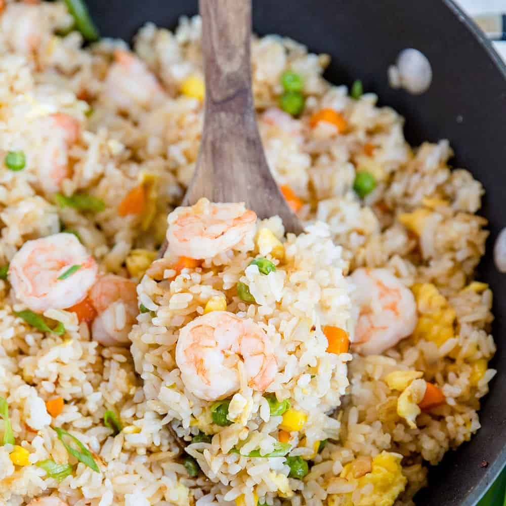

Shrimp Fried Rice

Description
Shrimp Fried Rice is one of my favorites, it is a quick and easy recipe using ingredients most households that consistently cook have readily available. The best part is that it is even better with leftover rice giving you an excellent way to use leftovers as opposed to wasting them. Combine with lemons for an outstanding flavor.
Ingredients
- 8 ounces small raw shrimp
- 1/2 teaspoon kosher salt
- Ground pepper
- 1/2 teaspoon cornstarch
- 3 tablespoons peanut oil
- 3 large eggs
- 2 green onions, minced
- 4 cups leftover rice
- 3/4 cup frozen peas & carrots, defrosted
- 1 tablespoon soy sauce
- 1 teaspoon dark toasted sesame oil
Steps
- Shell & devevine the shrimp under cold water
- Combine shrimp in a medium bowl with salt, pepper, & cornstarch then let it sit for 10 minutes
- Heat pan on medium-high heat
- Cook shrimp, let them sit for 30 seconds both sides without moving to fully cook
- Remove shrimp from the pan & set aside
- Sauté green onions in peanut oil for 15 seconds
- Add leftover rice to the pan, stir to combine & let is sit for 1-2 minutes, the rice should sizzle
- Turn over the rice using a spatula and cook it 1 minute longer
- As the rice finishes cooking push it to half of the pan and add the eggs in the other half
- Cook & stir the eggs until quite runny and combine with the rice
- Combine soy sauce & stir
- Add carrots, peas, shrimp, & sesame oil, stir to combine
- Serve with lemons or lemon juice for extra flavor